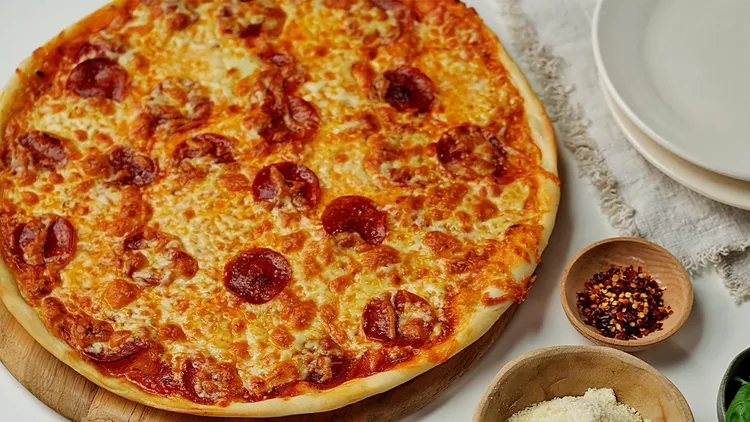

Pizza

Description
Pizza is a classic Italian dish featuring a crisp, golden crust topped with rich tomato sauce,
melted mozzarella cheese, and a variety of fresh ingredients. Baked to perfection,
it offers a delicious balance of savory flavors, gooey cheese, and a satisfying crunchy crust,
making it a favorite for any occasion.
Ingredients
- 21/2 Cups all-purpose flour
- 1 teaspoon salt
- 1 teaspoon sugar
- 1 teaspoon instant yeast
- 3/4 cup warm water
- 2 tablespoon olive oil
- 1/2 cup tomato sauce
- 1 tablespoon tomato paste
- 1 tablespoon oregano
- 1 tablespoon garlic powder
- Salt and black pepper to taste
- 200 gram mozarella cheese, shredded
- Pepperoni slices
- Mushroom, sliced
- Bell pepper, sliced
- Black olives
- Onion, thinly sliced
- Fresh basil leaves (optional)
Steps
- Combine the flour, salt, sugar, and yeast. Add the warm water and olive oil, then knead until smooth. Cover and let the dough rise for about 1 hour.
- Mix the tomato sauce, tomato paste, oregano, garlic powder, salt, and black pepper until well combined.
- Preheat the oven to 220°C (425°F). Roll the dough into a circle or rectangle and place it on a pizza pan or baking tray.
- Spread the pizza sauce evenly over the dough. Sprinkle mozzarella cheese on top, then add pepperoni, mushrooms, bell peppers, onions, olives, or any toppings you prefer.
- Bake for 12–15 minutes, or until the crust is golden brown and the cheese is melted and bubbly.
- Remove from the oven, garnish with fresh basil if desired, slice into portions, and serve hot. Enjoy!
Home